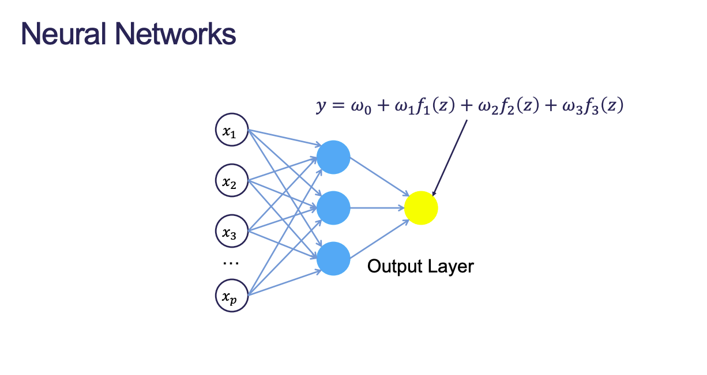
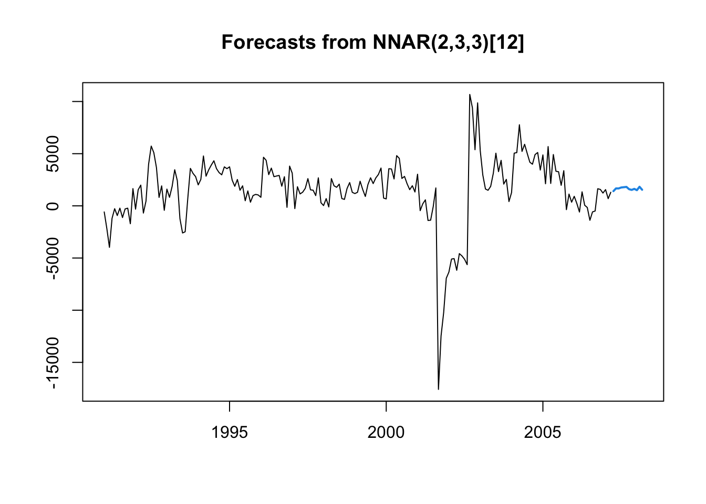
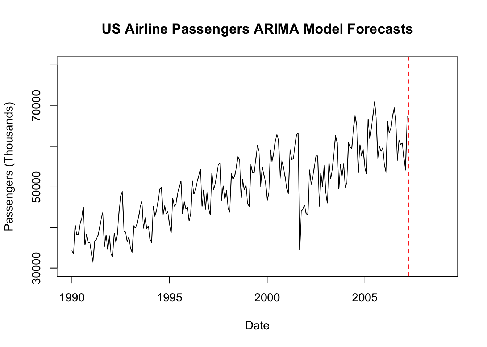

Registered S3 method overwritten by 'quantmod':
method from
as.zoo.data.frame zoo
Code
library(aTSA)
Attaching package: 'aTSA'
The following objects are masked from 'package:tseries':
adf.test, kpss.test, pp.test
The following object is masked from 'package:graphics':
identify
Code
library(forecast)
Attaching package: 'forecast'
The following object is masked from 'package:aTSA':
forecast
Code
set.seed(12345)USAirlines <-read.csv("https://raw.githubusercontent.com/sjsimmo2/TimeSeries/master/usairlines.csv")passenger <-ts(USAirlines$Passengers, start =1990, frequency =12)train <-subset(passenger, end =length(passenger) -12)test <-subset(passenger, start =length(passenger) -11)
2 Neural Net Basics
Neural network models are models based on mathematical models of how the brain functions.
They are organized in a network of neurons through layers. The input variables are considered the neurons on the bottom layer. The output variable is considered the neuron on the top layer.
The layers in between are called hidden layers transfrom the input variables through activation functions to try and model the output variable.
Figure 1 shows a basic neural net structure without a hidden layer.
Figure 1: Basic Neural Net Structure
Once we add a hidden layer, we apply non-linear activation functions in new nodes that get combined into an output.
Hidden Layer Added

Combining the Hidden Layer Output
3 Autoregressive Neural Networks
Neural network models used for forecasting in time series, just have lags of Y in the bottom layer along with other X variables.
Autoregressive Terms
3.1 Number of AR Lags
Explore with correlation plots or automatic selection techniques
Focus primarily on AR components of the model
For seasonal data we typically include all lags up throguh one season unless correlation plots say you only need specific ones
Still want to make data stationary first
If you don’t have stationary data, the forecasts will still revert to overall mean far enough into the future.
4 Implementing Neural Net AR
Code
set.seed(12345)1nn_model <-nnetar(diff(train, 12), p =2, P =3)2nn_forecast <- forecast::forecast(nn_model, h =12)plot(nn_forecast)
1
p refers to number of AR lags and P refers to number of seasonal AR lags. By default, the non-linear transformation used is the sigmoid function.
2
The neural net only knows about our differenced data so we need to add back the last 12 observations to get the original scale.

In the background, R automatically adjusts the forecasts to be on the original scale in ARIMA models. However, with neural net models we need to manually adjust the forecasts.
Code
pass_forecast <- train[(length(train) -11):length(train)] + forecast::forecast(nn_model, h =12)$mean[1:12]plot(train, main ="US Airline Passengers ARIMA Model Forecasts", xlab ="Date", ylab ="Passengers (Thousands)", xlim =c(1990, 2009), ylim =c(30000, 80000))lines(pass_forecast, col ="blue")abline(v =2007.25, col ="red", lty ="dashed")

Code
nn_error <- test - pass_forecastnn_MAE <-mean(abs(nn_error))nn_MAPE <-mean(abs(nn_error) /abs(test)) *100.0print(nn_MAE)